Add a validator#
Prior to becoming a validator, read Validator management to learn about best practices for validators. There is a minimum amount to stake (500000 CCD) to become a validator.
Note
All transfers and transactions cost a fee, including staking and unstaking transactions. The fee is based on the set NRG for that transaction and the current exchange rate. The cost of transaction fees is stable in Euros, and therefore the price in CCD varies depending on the CCD to EUR exchange rate. The fee will always be deducted from the Balance of the account, so it is important to have some available CCDs to cover fees. A locked-for-staking balance cannot be used to pay for these transactions. You can see the fee in the transaction log.
Warning
Do not stake all of your funds or you will not have enough to cover transaction fees for unstaking or other transactions.
CryptoX Concordium Wallet
Tap the account on the accounts screen and tap
 on the account balance screen.
on the account balance screen.Select Continue to validator setup.
You can now go through informational screens explaining the key concepts of validation on the Concordium blockchain. Tap Next to navigate through the screens. Tap Skip to proceed directly to registering your validation.
On the register validator screen you can see your available balance. Enter the amount you want to stake in the field. Tap Yes, add to restake validator rewards, or tap No, don’t add if you don’t want to restake rewards. In this case, rewards are deposited to your disposable balance at each pay day. Tap Continue.
Choose whether you want to open a staking pool or keep it closed. By opening a staking pool, others can delegate stake to your validator, thus increasing the chance that you are selected to produce a block and earn rewards. If you have a staking pool with delegators, the delegators also earn rewards when you produce blocks. Validators are also paid a commission by the delegators for producing blocks on their behalf. You can choose Close for delegation if you do not wish to run a staking pool. Tap Continue.
Set your commissions for your pool. This is the percentage you wish to earn from delegators to your pool when you have produced a block. Delegators can use this information when choosing a pool. Tap Continue.
If you open a staking pool, you can optionally provide a URL with information about your validator. This allows delegators to learn more about your pool and make informed decisions. This information is not shared for closed pools or validators. Tap Continue.
Now, export the validator keys. You need the validator keys to start the node. Tap Export validator keys and navigate to the location on your device where you want to save the file. Give the file a name and the extension .json.
Warning
If you’re going to transfer the validator keys to someone else, make sure to do so through a secure channel. Generate new keys if you believe the keys have been compromised or lost.
Once you have saved the keys, you see an overview screen of the add validator transaction. Review the information then tap Submit validator transaction.
The wallet shows that the transaction has been submitted to the chain. Tap Finish. Once the transaction is approved, the active validator screen appears where you have the possibility to update validator settings.
You need to import your validator keys file to your node in order to start producing blocks. It is preferable to update them on the node as close to the next pay day as possible to prevent the node from being down as a validator for a longer time.
Once the transaction is finalized after importing your validator keys to the node, you see the status reflected in the account list and on the account balance screen.
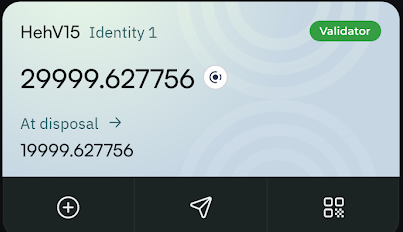 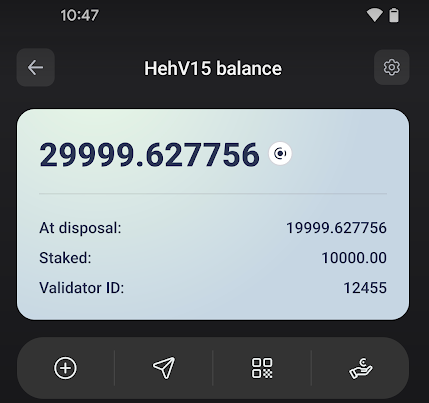
Desktop wallet
Note
A Single-signature account is an account with only one credential holder. A Multi-signature account is an account where multiple individuals are credential holders and a certain number of credential holders must sign transactions on the account. For more information about multi-signature accounts, see Shared accounts with multiple credentials in Desktop Wallet.
Single signature account
Go to Accounts and select the account you want to add as validator account and click More options.
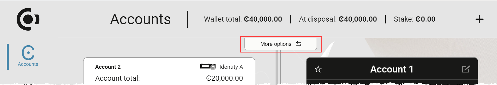Select Register as a validator.
Specify the amount that you want to stake where it says Amount. The more you stake, the greater the probability that your account will be chosen to produce the next block.
Validator accounts receive a reward when they have produced a block, and the reward is added to the staked amount on the account by default. However, you can change this setting so that the reward is added to the disposable amount instead. Select No, don’t restake if you’d rather add the rewards to the disposable amount on the account.
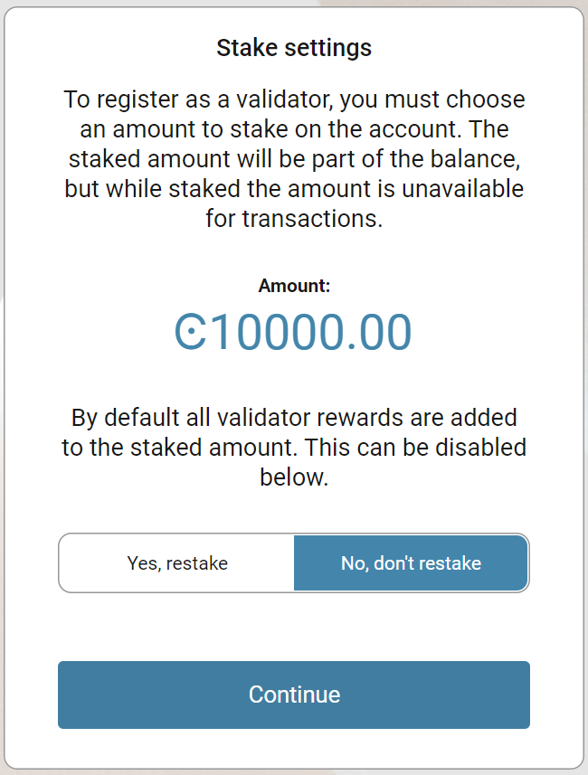Choose if you want to open a staking pool so delegators may delegate stake to your validator.
Choose Open to open your staking pool for this validator. Click Continue. Click Continue after adjusting the commission rates with the sliders or by typing a value. Enter your Validator metadata URL if you want to provide this information to potential delegators. This is optional. Click Continue.
Choose Closed if you do not want to open a staking pool. Click Continue after reviewing the commission rates and Validator metadata URL.


You have to export the validator credentials so that you can start the node with the validator keys. Select Export validator credentials and navigate to the place on your computer where you want to save the file. If you’re running Windows make sure that All Files is selected in Save as type. Give the file a name and the extension .json, and then click Save and navigate to the place on your computer where you want to save the file.
Warning
If you’re going to transfer the validator keys to someone else, make sure to do so through a secure channel. Generate new keys if you believe the keys have been compromised or lost.
There’s a message saying Waiting for device. Please connect your Ledger. Connect the LEDGER device to the computer and enter your PIN on the LEDGER device.
Press the right button to navigate to the Concordium app, and then press both buttons to open the app. The LEDGER device says Concordium is ready. Wait for the message Ledger Nano S is ready or Ledger Nano S Plus is ready in the Desktop Wallet and select Submit.
On the LEDGER device, a message says Review transaction. Review the information to verify that it matches the transaction details in the Desktop Wallet.
When the LEDGER device says Sign transaction, press both buttons to confirm the transaction. The LEDGER device says Concordium is ready.
In the Desktop Wallet, you can see that the transaction has been submitted to the chain. Select Finish.
Multi signature account
Go to the Multi Signature Transactions tab, and then select Make new proposal.
Click Register as a Validator.
Select the account you want to add as validator account, and then select Continue.
Stake an amount
You need to stake an amount of CCD on the account that you want to add as validator account. When you have staked an amount, the amount is still part of the balance, but you can’t transfer it to other accounts. The account always shows how much of the balance that’s been staked.
Specify the amount that you want to stake where it says Amount. The more you stake the greater is the probability that your account will be chosen to produce the next block.
Validator accounts receive a reward when they have produced a block, and the reward is added to the staked amount on the account by default. However, you can change this setting so that the reward is added to the disposable amount instead.
Select No, don’t restake if you’d rather add the rewards to the disposable amount on the account.
Choose if you want to open a staking pool so delegators may delegate stake to your validator.
Choose Open to open your staking pool for this validator. Click Continue. Click Continue after reviewing the commission rates. Enter your Validator metadata URL if you want to provide this information to potential delegators. Click Continue.
Choose Closed if you do not want to open a staking pool. Click Continue after reviewing the commission rates and Validator metadata URL.
When you look at the Transaction Details in the left pane, you can see the identity of the account owner, the account where the CCD are staked from, the staked amount, the estimated fee, and whether rewards are going to be restaked. Verify that the details are as you intended.
Select Generate keys. The validator keys are generated and the public keys are displayed in the left pane. There are three public keys:
Election verify key
Signature verify key
Aggregation verify
Select Continue to generate the transaction.
Generate the transaction
There are two ways that you can generate the transaction:
Generate the transaction without signing. This option enables you to export the transaction proposal without signing it. You don’t need a LEDGER device but you do need an internet connection.
Generate and sign the transaction This option requires a LEDGER device and an internet connection.
In combination, these two options enable organizations to distribute the responsibility of creating and signing transfers among more people. It makes it possible to have one employee create the proposals and another one sign the proposals. It also makes it possible to sign the transaction on the Ledger in a different location than where the proposal was created.
Generate the transaction without signing
Verify that the Transaction details are as you are as you intended, and then select I am sure that the proposed changes are correct.
Select Generate without signing. You can now export the validator credentials.
Generate and sign the transaction on the LEDGER device
Connect the LEDGER device to the computer if you haven’t done so already. There’s a message saying Waiting for device. Please connect your Ledger.
Enter your PIN code on the LEDGER device. Press the buttons above the up and down arrows to choose a digit, and then press both buttons to select the digit. Press the right button to navigate to the Concordium app, and then press both buttons to open the app. The LEDGER device says Concordium is ready. Wait for the message in the Desktop Wallet saying Ledger Nano S is ready.
In the Desktop Wallet verify that all transaction details are correct and select I am sure that the proposed changes are correct.
Select Generate and sign. There’s a message saying Waiting for user to finish the process on the device.
On the LEDGER device, there’s a message saying Review transaction. Review the information to verify that it matches the transaction details in the Desktop Wallet.
When the LEDGER device says Sign transaction, press both buttons to confirm the transaction. The LEDGER device says Concordium is ready.
Note
If you want to decline the transaction, press the right button on the LEDGER device. The hardware wallet now says Decline to sign transaction. Press both buttons to decline. In the Desktop Wallet there’s a message saying The action was declined on the Ledger device. Please try again.
Export validator credentials
You have to export the validator credentials so that you can start the node with the validator keys. Select Export validator credentials and navigate to the place on your computer where you want to save the file.
You can now see Transaction details, Signatures, and Security & Submission Details, which includes the status of the transaction, the identicon, and the digest to sign. You can also see the date and time before which you must submit the transaction proposal. If no more signatures are required, you can submit the transaction to the blockchain. If more signatures are required, you’ll have to export and send the transaction proposal to the co-signers.
Warning
If you’re going to transfer the validator keys to someone else make sure to do so through a secure channel. Generate new keys if you believe the keys have been compromised or lost.
Export a transaction proposal
If more than one signature is needed to sign off on the validator account proposal, you must share a file of the type JSON with the co-signers. In the Signatures pane, you can see how many signatures are required before you can submit the transaction to the blockchain.
In the Desktop Wallet, select Export transaction proposal.
Navigate to the location on your computer where you want to save the file. If you’re on Windows make sure that All Files is selected. Give the file a name and the extension .json, and then click Save.
Send a copy of the file through a secure channel to the co-signers that must sign the transaction. Optionally, you can also send a copy of the identicon through a secure channel that is different from the one used to send the file.
Receive signatures from co-signers
When the co-signers have signed the transaction, they return the signed transaction proposal to you, and you have to import the files into the Desktop Wallet before you can submit the transaction to the chain.
If you left the page with the account transaction, go to Multi-signature Transactions, and then select Your proposed transactions. If you’re still on the same page, go to step 3.
Select the transaction that you want to submit to the chain. You can see an overview of the transaction details and an overview of the signatures. You can also see that the status of the transaction is Unsubmitted, and you can see the identicon, and the transaction hash.
Select Browse to file and then navigate to the location on your computer where you saved the signed transaction files. Select the relevant files, and then select OK. The files are uploaded to the Desktop Wallet and added to the list of signatures. Alternatively, you can drag and drop the signature files from their location on the computer and on to the Desktop Wallet.
Submit the transaction to the blockchain
When you have received and added all the required signatures, you can submit the transaction to the blockchain.
Review the transaction details carefully to ensure that all information is correct.
Select I understand this is the final submission, and that it cannot be reverted.
If you don’t want to submit the transaction to the chain, you can select Cancel. The proposal is no longer active; however it is still visible in the list of proposals.
Select Submit transaction to chain. The transaction is submitted to the chain and finalized on the ledger.
Select Finish to leave the page.
Concordium Wallet for Mobile
You can either: tap
 on the account you want to delegate from in the Accounts page, or tap on an account card and tap on the account transaction overview screen.
on the account you want to delegate from in the Accounts page, or tap on an account card and tap on the account transaction overview screen.Select Continue to validator setup.
After the screens explaining validation, specify the amount that you want to stake on the Register Validator screen. The more you stake, the greater the probability that your account will be chosen to produce the next block. Validator accounts receive a reward when they have produced a block, and the reward is added to the staked amount on the account by default. However, you can change this setting so that the reward is added to the disposable amount instead. Select Don’t restake if you’d rather add the rewards to the disposable amount on the account.
Choose whether you want to open a staking pool or keep it closed. By opening a staking pool, others can delegate stake to your validator, thus increasing the chance that you are selected to produce a block and earn rewards. If you have a staking pool with delegators, the delegators also earn rewards when you produce blocks. Validators are also paid a commission by the delegators for producing blocks on their behalf. You can choose Close for delegation if you do not wish to run a staking pool.
Set your commissions for your pool. This is the percentage you wish to earn from delegators to your pool when you have produced a block. Delegators can use this information when choosing a pool.
If you open a staking pool, you can optionally enter a URL with information about your validator to give delegators more information about your pool to help them research staking pools. This information is not shared in the case of a closed pool or validator.
You have to export the validator credentials so that you can start the node with the validator keys. Tap Export validator keys and navigate to the place on your device where you want to save the file. Give the file a name and the extension .json.
Warning
If you’re going to transfer the validator keys to someone else, make sure to do so through a secure channel. Generate new keys if you believe the keys have been compromised or lost.
Once you have saved the keys, you see an overview screen of the add validator transaction. Review the information then tap Submit validator transaction.
The wallet shows that the transaction has been submitted to the chain. Tap Finish. Once the transaction is approved, the active validator screen appears where you have the possibility to update validator settings.
You need to import your validator keys file to your node in order to start producing blocks. It is preferable to update them on the node as close to the next pay day as possible to prevent the node from being down as a validator for a longer time.
Once the transaction is finalized after importing your validator keys to the node, you see the status reflected in the account list and on the account card.


Concordium Legacy Wallet
Go to Accounts. Tap on the balance area of the account you want to add as a validator account or tap More
 .
.In the hamburger menu
 tap Validator.
tap Validator.After the screens explaining validation, specify the amount that you want to stake on the Register Validator screen. The more you stake, the greater the probability that your account will be chosen to produce the next block. Validator accounts receive a reward when they have produced a block, and the reward is added to the staked amount on the account by default. However, you can change this setting so that the reward is added to the disposable amount instead. Select Don’t restake if you’d rather add the rewards to the disposable amount on the account.
Note
There is a minimum amount to stake (500000 CCD) to become a validator.
Warning
Do not stake all of your funds or you will not have enough to cover transaction fees for unstaking or other transactions.
Choose whether you want to open a staking pool or keep it closed. By opening a staking pool, others can delegate stake to your validator, thus increasing the chance that you are selected to produce a block and earn rewards. If you have a staking pool with delegators, the delegators also earn rewards when you produce blocks. Validators are also paid a commission by the delegators for producing blocks on their behalf. You can choose Close for delegation if you do not wish to run a staking pool.
Note
In the Concordium Legacy Wallet it is not possible for pool owners to set the commissions. They are fixed at 10%. If you want to be able to adjust commissions, you must use the Concordium Wallet for Mobile or Concordium Wallet for Web. For information about the process, see the delegation FAQ.
If you open a staking pool, you can optionally enter a URL with information about your validator to give delegators more information about your staking pool to help them research pools. This information is not shared in the case of a closed validator or staking pool.
You have to export the validator credentials so that you can start the node with the validator keys. Tap Export validator keys and navigate to the place on your device where you want to save the file. Give the file a name and the extension .json.
Warning
If you’re going to transfer the validator keys to someone else, make sure to do so through a secure channel. Generate new keys if you believe the keys have been compromised or lost.
Once you have saved the keys, you see an overview screen of the add validator transaction. Review the information then tap Submit validator transaction.
The wallet shows that the transaction has been submitted to the chain. Tap Finish. Once the transaction is approved, the active validator screen appears where you have the possibility to update validator settings.
You need to import your validator keys file to your node in order to start producing blocks. It is preferable to update them on the node as close to the next pay day as possible to prevent the node from being down as a validator for a longer time.
Once the transaction is finalized after importing your validator keys to the node, you see the status reflected in the account list and on the account card.
Concordium Wallet for Web
Click
on the navigation bar. Use the left and right arrow to locate the button if necessary.
Click Setup validation. If you are setting up validation for the first time on this account, you see some information about being a validator.
Select your restake preference. Validator accounts receive a reward when they have produced a block, and the reward is added to the staked amount on the account by default. However, you can change this setting so that the reward is added to the disposable amount instead. Click Yes, restake to restake any rewards or click No, don’t restake if you don’t want to restake rewards. If you do not restake, rewards are deposited to your disposable balance. Click Continue.
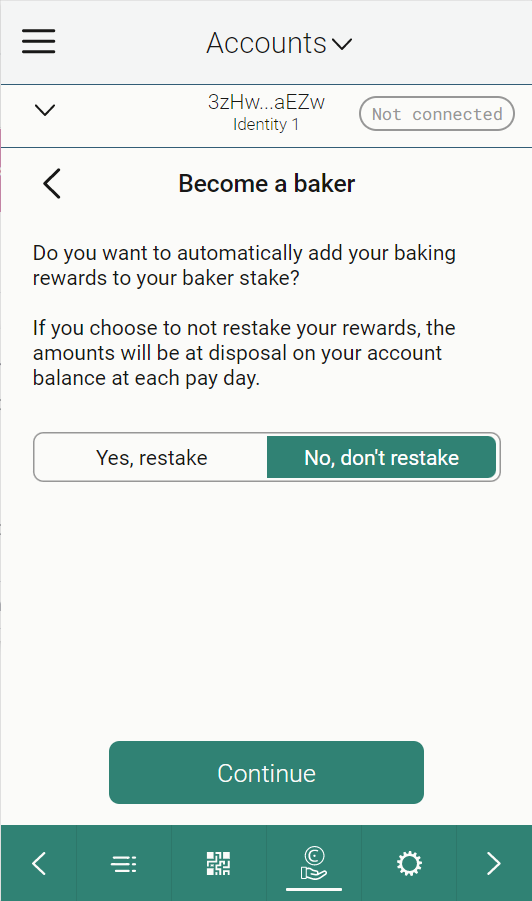Specify the amount that you want to stake. The more you stake, the greater the probability that your account will be chosen to produce the next block. Click Continue.
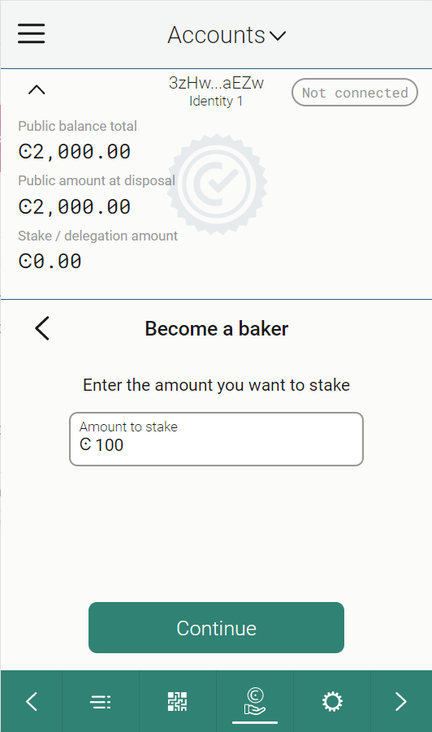
Choose whether you want to open a staking pool or keep it closed. Choose Open for delegation to open a staking pool. By opening a staking pool, others can delegate stake to your validator, thus increasing the chance that you are selected to produce a block and earn rewards. If you have a staking pool with delegators, the delegators also earn rewards when you produce blocks. Validators are also paid a commission by the delegators for producing blocks on their behalf. You can choose Close for delegation if you do not wish to run a staking pool. Click Continue.
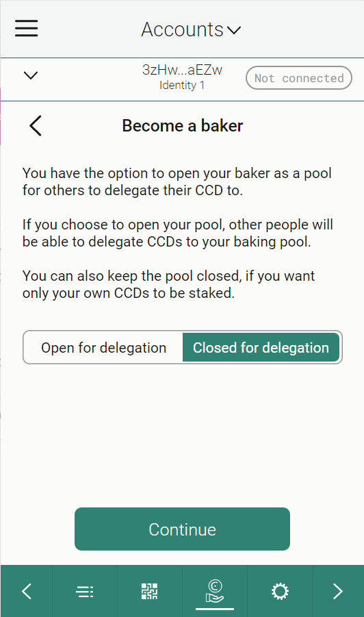Review and adjust the commissions paid to validators using the sliders or by typing in the percentage. When you open your validator as a pool, you earn commissions of stake delegated to your pool from other accounts. Click Continue.
If you open a staking pool, you can optionally enter a URL with information about your validator to give delegators more information about your staking pool to help them research staking pools. Click Continue.
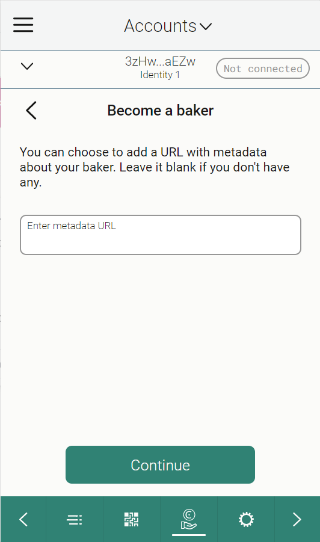You have to export the validator keys so that you can start the node with the validator keys. Click Export validator keys and the keys are automatically downloaded as validator-credentials.json to your default download folder. Click Continue to complete the transaction.
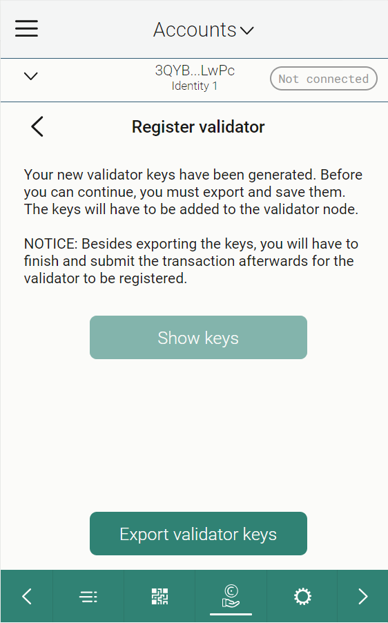
Warning
If you’re going to transfer the validator keys to someone else, make sure to do so through a secure channel. Generate new keys if you believe the keys have been compromised or lost.
Once you have saved the keys, you see an overview screen of the add validator transaction. Review the information then click Send.
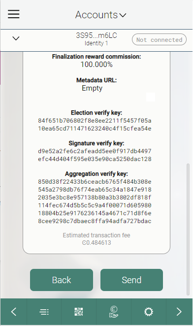The wallet shows that the transaction has been submitted to the chain. Click Finish.
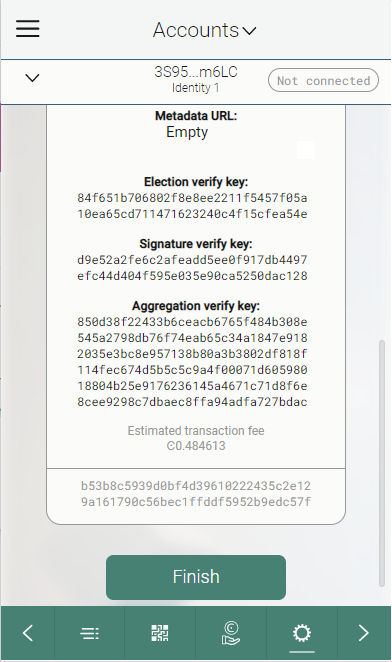You need to import your validator keys file to your node in order to start producing blocks. It is preferable to update them on the node as close to the next pay day as possible to prevent the node from being down as a validator for a longer time.
Once the transaction is finalized after importing your validator keys to the node, you see the status reflected in the account list and on the account card.
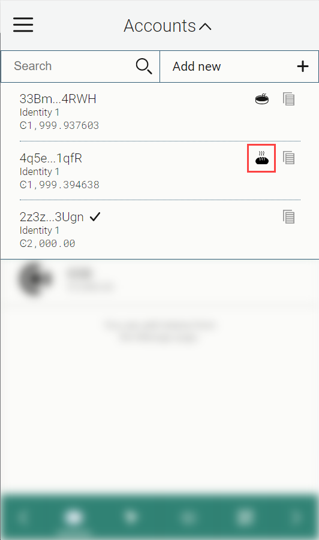 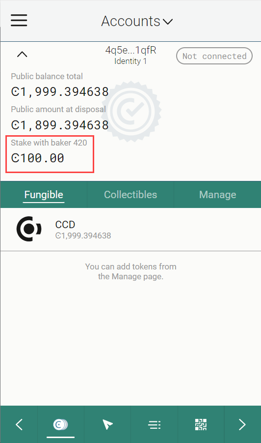Warning
Transactions on the blockchain are permanent. That is, they are irreversible and can’t be deleted. Therefore, carefully review that you have selected the right account to add as validator, and that you have entered the correct amount to stake.

{kind=link}
{kind=link}
{kind=link}
{kind=link}
{kind=link}
{kind=link}
{kind=link}
{kind=link}
{kind=link}
{kind=link}
{kind=link}
{kind=link}
{kind=link}
{kind=link}
{kind=link}
{kind=link}
{kind=link}
{kind=link}
{kind=link}
{kind=link}
{kind=link}
{kind=link}
{kind=link}
{kind=link}
{kind=link}
{kind=link}